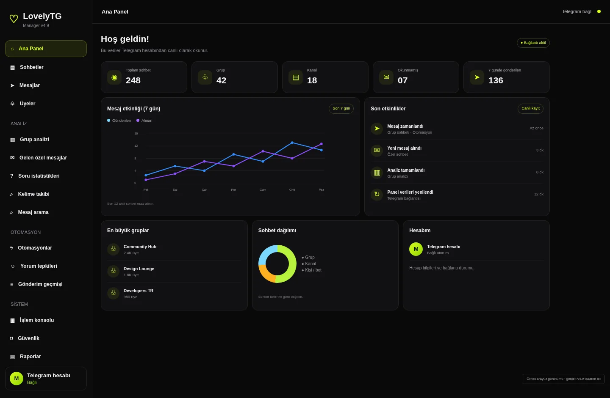

Telegram işlerin tek panelde. Göndermeden önce son söz sende.
LovelyTG hesaplarını, zamanlanmış görevlerini ve gelen kutunu bir araya getirir. Yapay zekâ işi hazırlar, sen önizleyip onaylarsın.
Python ile kendi cihazında çalışır: Flask, Telethon ve SQLite. Oturumların sende kalır.
sen
- 3 grup bulundu, gönderim izni var
- Saat 09:00 için zamanlayıcı hazır
- Mesaj taslağı yazıldı
Önizleme: 3 gruba, yarın 09:00
Günaydın! Bugünkü duyurular için sabitlenen mesaja göz atmayı unutmayın.
Planlandı. Yarın 09:00'da gönderilecek, işlem kaydına eklendi.
Panelin kendisi
Koyu, sade ve tek elle gezilebilir. Soldaki menüden her alana bir dokunuşla geçersin.

Tek panel, sekiz çalışma alanı
Her alan kendi işini yapar. Soldan seç, ne yaptığını ve bugün hangi aşamada olduğunu gör.
Hız için değil, düzen için tasarlandı
Toplu spam ve sahte etkileşim yok. LovelyTG izinli iletişimi ve hesabını koruyan sınırları esas alır.
- Her hesabın kendi sınırı var. Hesaplar ortak bir gönderim havuzuna dönüşmez.
- FloodWait'e uyar. Telegram'ın bekleme isteğinde durur, uzun beklemede kuralları kapatır.
- Belirsiz gönderim tekrarlanmaz. Sonucu net olmayan mesaj, sen karar verene kadar bekler.
- Mesaj onaysız gitmez. Cevap önerileri taslak olarak kalır.
- Sabah duyurusuÇalışıyor
- Haftalık raporÇalışıyor
- Grup anketiÇalışıyor
Panelde tek tuşla hepsini durdurabilir, hazır olunca sürdürebilirsin.
Neresi hazır, neresi yolda
Sürüm 4.9 ile kullanılanlar ve sıradaki işler. Özellik listesi bu tabloyla birlikte güncellenir.
| Alan | Durum |
|---|
Lisans seç
Süreyi seç, paketleri karşılaştır. Her paket aynı panelle gelir; fark hesap sayısı, otomasyon ve geçmiş süresindedir.
Ödeme ve talep
Paketi seç, talebi oluştur, ödemeyi yap. Açıklamaya talep metnindeki bilgileri ekle; ödeme kontrol edildikten sonra lisansın tanımlanır.
- Hesap sahibi
- IBAN
- Ağ
- Cüzdan adresi
Yalnızca yukarıdaki ağdan gönder. Yanlış ağdaki transferler geri alınamayabilir.
Sık sorulanlar
Lisans nasıl etkinleşir?
Ödeme ve dekont kontrol edildikten sonra lisans anahtarı oluşturulup sana iletilir. Süreç şu an manuel yürür.
Paketler arasındaki fark nedir?
Hesap sayısı, aktif otomasyon sayısı, işlem geçmişi süresi ve AI erişimi. Panelin kendisi her pakette aynıdır.
Yapay zekâ özellikleri için ne gerekir?
Kendi AI sağlayıcı API anahtarın. Yapay zekâ yalnızca taslak ve öneri üretir, gönderimi sen onaylarsın.
Sınırsız gönderim yapabilir miyim?
Hayır. Telegram kuralları ve hesap limitleri geçerlidir. LovelyTG bu sınırlara uyar ve aşmanı kolaylaştırmaz.
Verilerim nerede duruyor?
Oturumlar ve veritabanı, panelin çalıştığı cihazda hesap başına ayrı klasörde tutulur. Yedeklerini panelden alıp geri yükleyebilirsin.
Deneme sürümü var mı?
Haftalık lisans, paneli kısa süreli denemenin en düşük maliyetli yoludur.